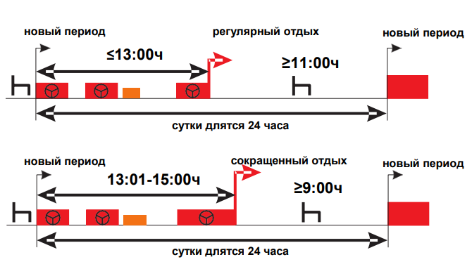

Регулярное время работы (ежедневная смена) не должно превышать 13 часов.
Время работы может быть увеличено до 15 часов в сутки, но не более 3 раз в неделю.
Eсли в течении смены была пауза не меннее 3 часов, смену можно продлить до 15 часов.
Можно увеличить время работы на 1-2 часа, если водитель едет на базу для еженедельного отдыха, и ранее сделал 30-45 минут перерыва.
Сразу по прибытию, необходимо сделать распечатку с описанием и это время должно быть рекомпенсировано в течение 3 недель.
